Note
Click here to download the full example code
Case 16: Circular F-16 flight around Equator/dateline intersection
Verifies |
Sign changs in latitude and longitude |
Gravitation |
J2 |
Geodesy |
WGS-84 rotating |
Atmosphere |
US 1976 STD |
Winds |
still air |
Vehicle |
F-16 with circumnavigating auto-pilot |
Notes |
Initially straight & level and engage auto-pilot |
from simupy import systems
from simupy.block_diagram import BlockDiagram
import os
import numpy as np
from scipy import interpolate
import matplotlib.pyplot as plt
from nesc_testcase_helper import (
get_baselines,
nesc_options,
plot_nesc_comparisons,
plot_F16_controls,
nesc_colors,
benchmark,
)
from nesc_testcase_helper import ft_per_m
import F16_model
from F16_gnc import F16_gnc, trimmedKEAS
F16_vehicle = F16_model.F16()
from nesc_case11 import (
BD,
earth,
rho_0,
eval_trim,
run_trimmer,
knots_per_mps,
)
from nesc_case15 import (
earth_output_for_gnc_select,
dim_feedback,
get_gnc_function,
int_opts,
)
spec_ic_args = dict(
phi_D=0.0 * np.pi / 180, # latitude
lamda_D=-179.95 * np.pi / 180, # longitude
h=10_000 / ft_per_m,
V_N=563.643 / ft_per_m,
V_E=0.0 / ft_per_m,
V_D=0.0 / ft_per_m,
psi=0.0 * np.pi / 180,
theta=0.0 * np.pi / 180,
phi=0.0 * np.pi / 180,
p_B=0.0 * np.pi / 180,
q_B=0.0 * np.pi / 180,
r_B=0.0 * np.pi / 180,
)
opt_args, opt_ctrl = run_trimmer(
spec_ic_args, throttle_ic=0.0, longStk_ic=0.0, allow_roll=False
)
trimmed_flight_condition = earth.ic_from_planetodetic(**opt_args)
trimmed_KEAS = (
earth.output_equation_function(0, trimmed_flight_condition)[earth.V_T_idx]
* np.sqrt(
earth.output_equation_function(0, trimmed_flight_condition)[earth.rho_idx]
/ rho_0
)
* knots_per_mps
)
earth.initial_condition = trimmed_flight_condition
gnc_block = systems.SystemFromCallable(
get_gnc_function(*opt_ctrl, keasCmd=trimmed_KEAS, circlePoleSW=False),
dim_feedback,
4,
)
BD = BlockDiagram(earth, F16_vehicle, gnc_block)
BD.connect(earth, F16_vehicle, inputs=np.arange(earth.dim_output))
BD.connect(F16_vehicle, earth, inputs=np.arange(F16_vehicle.dim_output))
BD.connect(
gnc_block, F16_vehicle, inputs=np.arange(earth.dim_output, earth.dim_output + 4)
)
BD.connect(earth, gnc_block, outputs=earth_output_for_gnc_select)
with benchmark() as b:
res = BD.simulate(180, integrator_options=int_opts)
plot_nesc_comparisons(res, "16")
plot_F16_controls(res, "16", y_idx_offset=0)
- 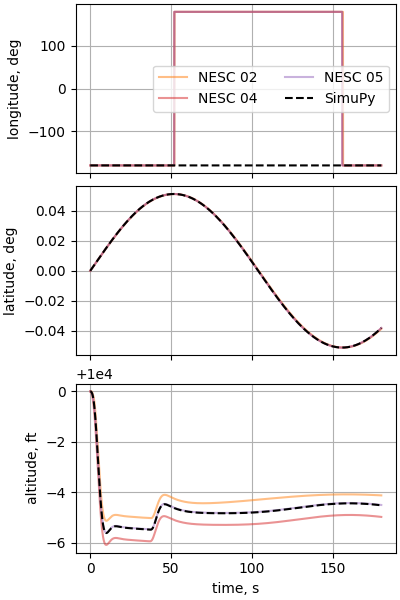
- 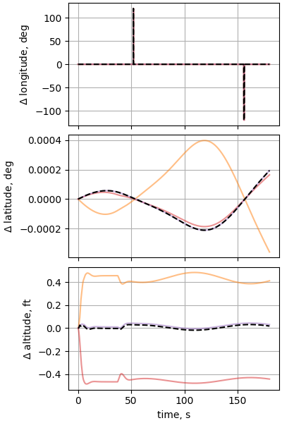
- 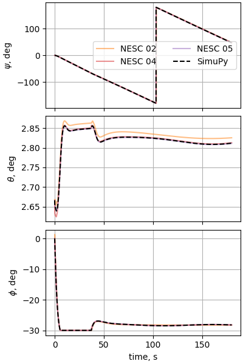
- 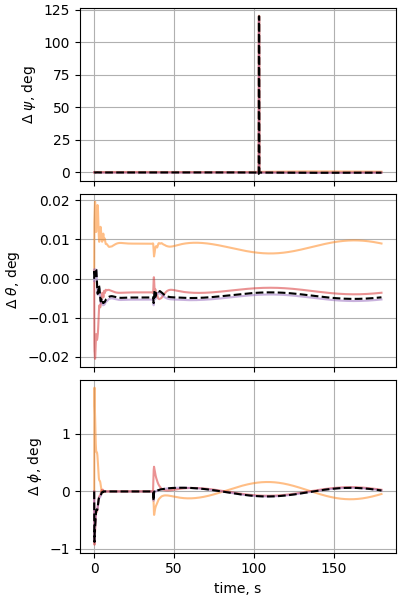
- 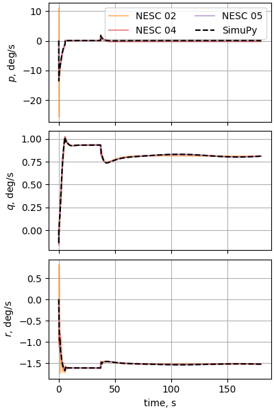
- 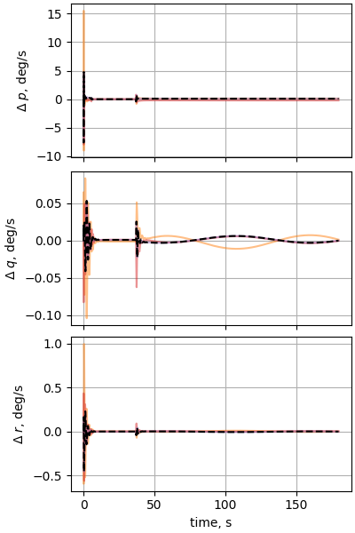
- 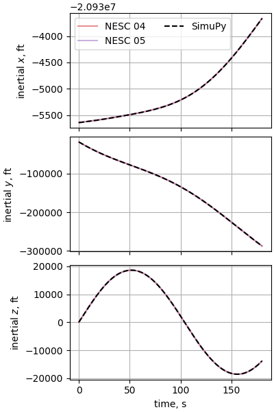
- 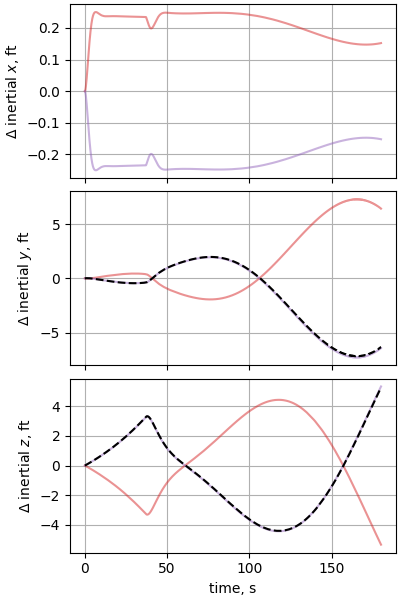
- 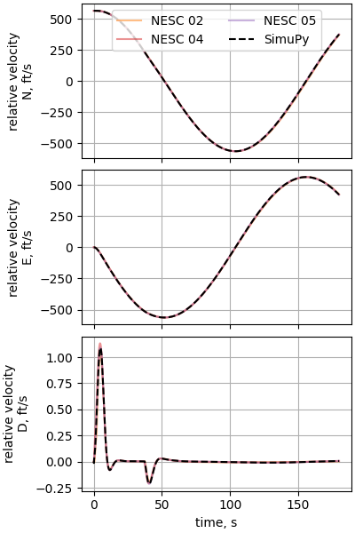
- 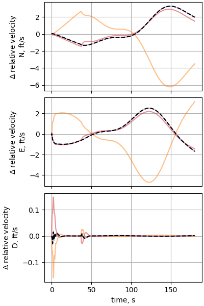
- 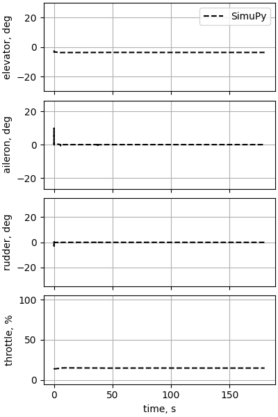
Out:
Optimization terminated successfully.
Current function value: 0.000000
Iterations: 279
Function evaluations: 518
pitch: 2.6659e+00 roll: 0.0000e+00 longStk: 12.9899 throttle: 13.8207
accelerations:
[[-1.16304744e-11 9.40508088e-13 -1.68081724e-11]
[ 1.84840687e-11 2.49043324e-12 1.45023664e-09]]
time to simulate: 410.502 s
missing eiPosition_ft_X for SIM 02
missing eiPosition_ft_Y for SIM 02
missing eiPosition_ft_Z for SIM 02
plt.subplots(constrained_layout=True)
plt.axis("equal")
sim_lat = res.y[:, earth.phi_D_idx] * 180 / np.pi
sim_long = res.y[:, earth.lamda_D_idx] * 180 / np.pi
baseline_pds, baseline_pd_labels = get_baselines("16")
for baseline_idx, baseline_pd in enumerate(baseline_pds):
baseline_long = (
np.unwrap(2 * baseline_pd["longitude_deg"] * np.pi / 180) * 90 / np.pi
)
baseline_lat = baseline_pd["latitude_deg"].values
plt.plot(
baseline_long,
baseline_lat,
nesc_colors[baseline_pd_labels[baseline_idx]],
alpha=0.5,
label="NESC %s" % (baseline_pd_labels[baseline_idx]),
)
plt.plot(
baseline_long[0],
baseline_lat[0],
"o",
alpha=0.5,
markerfacecolor="None",
markeredgecolor=nesc_colors[baseline_pd_labels[baseline_idx]],
)
plt.plot(
baseline_long[-1],
baseline_lat[-1],
"x",
alpha=0.5,
markerfacecolor="None",
markeredgecolor=nesc_colors[baseline_pd_labels[baseline_idx]],
)
plt.plot(sim_long, sim_lat, "k-", alpha=1.0)
plt.plot(
sim_long[0], sim_lat[0], "o", alpha=0.5, markerfacecolor="None", markeredgecolor="k"
)
plt.plot(
sim_long[-1],
sim_lat[-1],
"x",
alpha=0.5,
markerfacecolor="None",
markeredgecolor="k",
)
plt.xlabel("longitude, deg")
plt.ylabel("latitude, deg")
plt.grid(True)
if nesc_options["interactive_mode"]:
plt.show()
else:
plt.savefig(os.path.join(nesc_options["save_relative_path"], "16_groundtrack.pdf"))
Total running time of the script: ( 6 minutes 57.072 seconds)